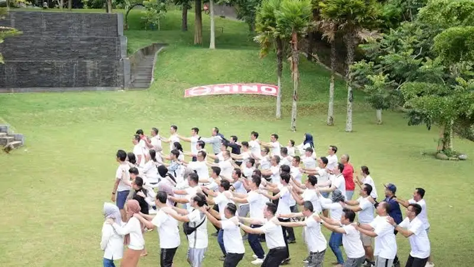

Outbound LDKS & MPLS sekolah adalah rangkaian kegiatan luar ruang yang dirancang untuk melatih kepemimpinan siswa sekaligus mengenalkan lingkungan sekolah baru secara menyenangkan dan aman.
- Outbound LDKS berfokus pada pembentukan karakter kepemimpinan calon pengurus OSIS.
- Outbound MPLS berfokus pada pengenalan lingkungan sekolah bagi siswa baru tanpa unsur perpeloncoan.
- Program yang baik menggabungkan permainan kerja sama tim, simulasi kepemimpinan, dan refleksi nilai.
- Pemilihan penyedia jasa outbound yang berpengalaman menjadi faktor penentu keberhasilan dan keamanan kegiatan.
- Evaluasi pasca kegiatan membantu sekolah mengukur dampak outbound terhadap siswa.
Apa Itu Outbound LDKS & MPLS Sekolah?
Outbound LDKS & MPLS sekolah adalah metode pembelajaran pengalaman (experiential learning) di luar kelas yang menggabungkan unsur permainan, tantangan fisik ringan, dan diskusi reflektif untuk mendukung tujuan LDKS maupun MPLS.
LDKS atau Latihan Dasar Kepemimpinan Siswa umumnya ditujukan bagi calon pengurus OSIS dan organisasi kesiswaan lainnya. Fokus utamanya adalah membangun kemampuan mengambil keputusan, komunikasi, dan kerja sama tim dalam konteks kepemimpinan sekolah. MPLS atau Masa Pengenalan Lingkungan Sekolah, di sisi lain, diperuntukkan bagi siswa baru dengan tujuan mengenalkan budaya sekolah, tata tertib, fasilitas, hingga teman sebaya secara ramah dan tidak bersifat perploncoan.
Meski tujuan keduanya berbeda, outbound sering dipilih sebagai metode pelaksanaan karena sifatnya yang interaktif dan mampu menciptakan pengalaman belajar yang lebih membekas dibandingkan metode ceramah di dalam kelas.
Mengapa Outbound Penting untuk LDKS dan MPLS?
Outbound penting karena mampu menghadirkan pembelajaran aktif yang membangun karakter siswa secara langsung melalui pengalaman, bukan sekadar teori di ruang kelas.
Pendekatan experiential learning dalam outbound memungkinkan siswa mempraktikkan langsung nilai-nilai seperti tanggung jawab, kepercayaan, dan kepemimpinan situasional. Dalam konteks LDKS, siswa dilatih menghadapi simulasi masalah yang menuntut pengambilan keputusan cepat sebagai calon pemimpin organisasi. Dalam konteks MPLS, siswa baru dibantu beradaptasi dengan lingkungan sosial baru melalui permainan yang mendorong interaksi dan keakraban antarsiswa maupun dengan kakak kelas atau guru pendamping.
Berdasarkan Peraturan Menteri Pendidikan dan Kebudayaan Nomor 18 Tahun 2016 tentang Pengenalan Lingkungan Sekolah bagi Siswa Baru, kegiatan MPLS wajib bersifat edukatif, kreatif, dan bebas dari unsur perpeloncoan atau kekerasan, serta dilaksanakan pada hari sekolah pertama dengan durasi maksimal tiga hari. Regulasi ini menjadi acuan penting bagi sekolah dalam merancang aktivitas outbound MPLS yang aman dan sesuai ketentuan.
Selain itu, Peraturan Menteri Pendidikan dan Kebudayaan Nomor 82 Tahun 2015 tentang Pencegahan dan Penanggulangan Tindak Kekerasan di Lingkungan Satuan Pendidikan turut menjadi dasar hukum yang memperkuat pentingnya kegiatan orientasi maupun pelatihan kepemimpinan siswa dilakukan tanpa unsur kekerasan fisik maupun psikis.
Bagaimana Cara Kerja Program Outbound LDKS & MPLS?
Program outbound LDKS & MPLS umumnya berjalan melalui tahap perencanaan, pelaksanaan permainan berjenjang, dan sesi refleksi yang menghubungkan aktivitas dengan nilai pembelajaran.
Secara umum, alurnya dimulai dari pemanasan atau ice breaking untuk mencairkan suasana, dilanjutkan dengan permainan kerja sama tim berskala kecil, lalu meningkat menuju tantangan yang lebih kompleks seperti simulasi kepemimpinan atau permainan strategi kelompok. Setiap sesi biasanya ditutup dengan proses debrief, yaitu diskusi terpandu yang membantu siswa merefleksikan pelajaran dari permainan yang baru saja dilakukan.
Fasilitator berperan penting dalam tahap ini karena tidak semua nilai yang ingin disampaikan otomatis dipahami siswa hanya dari bermain. Peran fasilitator adalah menjembatani pengalaman bermain dengan pemahaman konseptual tentang kepemimpinan, kerja sama, dan adaptasi sosial.
Apa Saja Jenis Kegiatan Outbound untuk LDKS dan MPLS?
Jenis kegiatan outbound untuk LDKS dan MPLS umumnya terbagi menjadi permainan ice breaking, tantangan kerja sama tim, simulasi kepemimpinan, dan kegiatan reflektif penutup.
Untuk kegiatan LDKS, beberapa aktivitas yang umum digunakan antara lain simulasi pengambilan keputusan kelompok, permainan menyusun strategi dengan sumber daya terbatas, serta latihan komunikasi efektif antaranggota tim yang diberi peran berbeda-beda. Aktivitas ini dirancang untuk melatih siswa menghadapi situasi yang menuntut kepemimpinan nyata, bukan sekadar simulasi permukaan.
Untuk kegiatan MPLS, jenis permainan yang dipilih biasanya lebih ringan dan berorientasi pada perkenalan, seperti games mengenal nama teman sekelas, estafet kelompok, permainan puzzle kolaboratif, hingga tur lingkungan sekolah yang dikemas dalam bentuk permainan berburu petunjuk (scavenger hunt). Pendekatan ini membuat siswa baru merasa nyaman tanpa tekanan yang berlebihan.
Apa Perbedaan Utama Aktivitas Outbound LDKS dan MPLS?
Perbedaan utama aktivitas outbound LDKS dan MPLS terletak pada tingkat kompleksitas tantangan serta tujuan pembelajarannya, di mana LDKS lebih menekankan simulasi kepemimpinan sementara MPLS menekankan adaptasi sosial.
Outbound LDKS dirancang untuk peserta yang sudah memiliki dasar organisasi, sehingga tantangannya cenderung lebih kompleks dan mengandung unsur pengambilan keputusan strategis. Sebaliknya, outbound MPLS dirancang untuk siswa baru yang belum saling mengenal, sehingga tantangannya lebih sederhana dan berfokus pada membangun kenyamanan serta rasa memiliki terhadap sekolah.
Faktor Apa Saja yang Memengaruhi Keberhasilan Outbound Sekolah?
Keberhasilan outbound sekolah dipengaruhi oleh kesiapan fasilitator, kesesuaian jenis kegiatan dengan usia peserta, keamanan lokasi, dan kejelasan tujuan pembelajaran yang ingin dicapai.
Fasilitator yang berpengalaman mampu membaca dinamika kelompok dan menyesuaikan tingkat kesulitan permainan secara adaptif. Kesesuaian jenis kegiatan dengan usia dan kondisi fisik peserta turut menentukan tingkat partisipasi serta keamanan selama kegiatan berlangsung. Lokasi yang dipilih idealnya memiliki fasilitas dasar yang memadai, seperti area datar untuk permainan, akses air bersih, dan jalur evakuasi yang jelas apabila diperlukan.
Selain itu, kejelasan tujuan pembelajaran menjadi faktor yang sering terlewat. Sekolah perlu menetapkan sejak awal nilai apa yang ingin dibangun melalui outbound, apakah kepemimpinan, kerja sama, disiplin, atau adaptasi sosial, agar rangkaian aktivitas dapat dirancang secara konsisten mengarah pada tujuan tersebut.
Apa Saja Kesalahan Umum dalam Menyelenggarakan Outbound LDKS & MPLS?
Kesalahan umum dalam menyelenggarakan outbound LDKS & MPLS meliputi kurangnya briefing keselamatan, permainan yang tidak sesuai usia, minimnya sesi refleksi, dan pengawasan yang tidak memadai.
Salah satu kesalahan yang sering terjadi adalah panitia terlalu fokus pada aspek keseruan permainan tanpa memberikan briefing keselamatan yang memadai kepada peserta. Kesalahan lain adalah memilih jenis tantangan yang terlalu berat secara fisik bagi siswa baru dalam MPLS, sehingga menimbulkan kelelahan berlebih alih-alih rasa nyaman terhadap lingkungan sekolah.
Kesalahan berikutnya adalah melewatkan sesi debrief atau refleksi setelah permainan. Tanpa sesi ini, siswa cenderung hanya mengingat kesenangan bermain tanpa memahami nilai pembelajaran yang sebenarnya ingin disampaikan. Terakhir, pengawasan yang tidak memadai, baik dari sisi rasio fasilitator terhadap peserta maupun pengawasan terhadap potensi bullying atau senioritas terselubung, dapat membuat kegiatan menyimpang dari semangat MPLS yang ramah dan bebas kekerasan sebagaimana diatur dalam Permendikbud Nomor 18 Tahun 2016.
Bagaimana Tips Memilih Penyedia Jasa Outbound LDKS & MPLS?
Tips memilih penyedia jasa outbound LDKS & MPLS meliputi memeriksa rekam jejak pengalaman, standar keselamatan, kesesuaian kurikulum kegiatan, serta ketersediaan fasilitator berpengalaman menangani kelompok pelajar.
Sekolah sebaiknya menanyakan portofolio kegiatan yang pernah ditangani penyedia jasa, khususnya pengalaman menangani kelompok pelajar dalam jumlah besar. Standar keselamatan juga penting diperiksa, mencakup ketersediaan perlengkapan keselamatan dasar, prosedur penanganan darurat, serta asuransi kegiatan bila tersedia. Kesesuaian kurikulum kegiatan dengan tujuan LDKS atau MPLS sekolah juga perlu dikonfirmasi sejak tahap perencanaan, bukan hanya berdasarkan daftar permainan generik.
Terakhir, ketersediaan fasilitator yang memang berpengalaman menangani kelompok usia pelajar, bukan hanya kelompok korporat atau umum, menjadi pembeda penting karena pendekatan komunikasi terhadap siswa memerlukan kepekaan tersendiri.
Bagaimana Perbandingan Outbound LDKS dan MPLS Secara Umum?
Perbandingan outbound LDKS dan MPLS secara umum dapat dilihat dari sasaran peserta, tingkat kompleksitas kegiatan, serta durasi pelaksanaan yang biasanya berbeda antara keduanya.
FAQ
Apa itu outbound LDKS & MPLS sekolah?
Outbound LDKS & MPLS sekolah adalah kegiatan luar ruang berbasis pengalaman yang digunakan untuk melatih kepemimpinan siswa dalam LDKS dan mengenalkan lingkungan sekolah bagi siswa baru dalam MPLS.
Apakah outbound MPLS wajib mengikuti aturan pemerintah?
Ya, outbound MPLS di sekolah wajib mengikuti Permendikbud Nomor 18 Tahun 2016 yang mengatur pelaksanaan MPLS bebas dari perpeloncoan dan kekerasan.
Berapa lama durasi ideal outbound LDKS?
Durasi outbound LDKS dapat bervariasi tergantung kebutuhan sekolah, mulai dari kegiatan satu hari hingga beberapa hari, tergantung kedalaman materi kepemimpinan yang ingin dicapai.
Arya
penulis artikel yang sudah berpengalaman di dalam dunia wisata outbound Batu Malang.